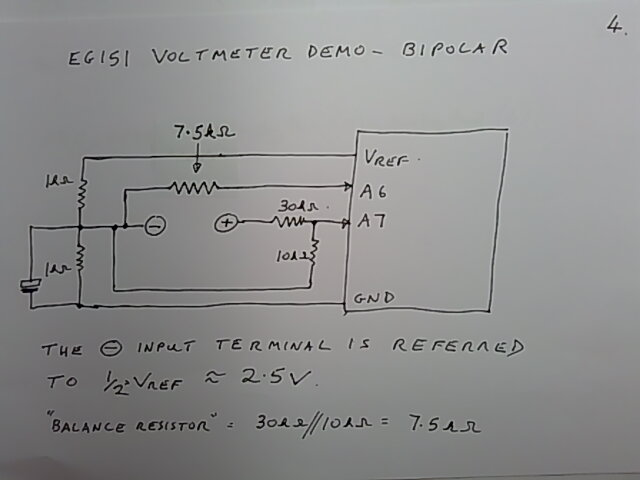
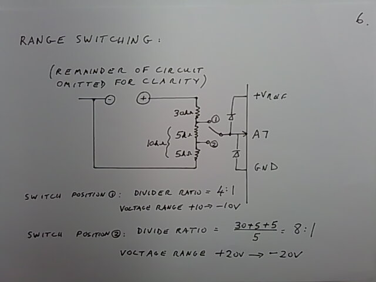
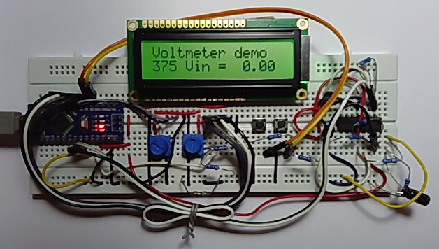

Bipolar Voltage Measurement#
Here is some additional information for students who have chosen the Voltmeter mini-project.
What follows is a short video on how to measure and display bipolar (plus and minus) voltages.
Some stills from the video:

Fig. 157 Measuring a bipolar voltage source with an ADC#

Fig. 158 Range switching#

Fig. 159 Prototype bipolar voltage management#
Code used in this demonstration:
/*
LiquidCrystal Library - Hello World
Demonstrates the use a 16x2 LCD display. The LiquidCrystal
library works with all LCD displays that are compatible with the
Hitachi HD44780 driver. There are many of them out there, and you
can usually tell them by the 16-pin interface.
This sketch prints "Hello World!" to the LCD
and shows the time and the value of analogue input A7
The circuit:
LCD RS pin to digital pin 8
LCD Enable pin to digital pin 9
LCD D4 pin to digital pin 4
LCD D5 pin to digital pin 5
LCD D6 pin to digital pin 6
LCD D7 pin to digital pin 7
LCD R/W pin to ground
LCD VSS pin to ground
LCD VCC pin to 5V
10K resistor:
ends to +5V and ground
wiper to LCD VO pin (pin 3)
analogue input to Nano A7
Library originally added 18 Apr 2008
by David A. Mellis
library modified 5 Jul 2009
by Limor Fried (http://www.ladyada.net)
example added 9 Jul 2009
by Tom Igoe
modified 22 Nov 2010
by Tom Igoe
modified 7 Nov 2016
by Arturo Guadalupi
this sketch modified 24th Nov 2021
by Timothy Davies
*/
// include the library code:
#include <LiquidCrystal.h>
// initialize the library by associating any needed LCD interface pin
// with the arduino pin number it is connected to
const int rs = 8, en = 9, d4 = 4, d5 = 5, d6 = 6, d7 = 7;
LiquidCrystal lcd(rs, en, d4, d5, d6, d7);
// define the left and right push buttons
const int left = 11, right = 10;
float ADC_READING = 0;
void setup() {
// set up the LCD's number of columns and rows:
lcd.begin(16, 2);
// Print a message to the LCD.
lcd.print("Voltmeter demo");
pinMode(left, INPUT_PULLUP);
pinMode(right, INPUT_PULLUP);
}
void loop() {
// set the cursor to column 0, line 1
// (note: line 1 is the second row, since counting begins with 0):
lcd.setCursor(0, 1);
// print the number of seconds since reset:
lcd.print(millis() / 1000);
//move the cursor to the middle of the second line
lcd.setCursor(4, 1);
//print the message with extra spaces to blank previous analogue data
lcd.print("Vin = ");
//move the cursor to the printing position for the analogue data
lcd.setCursor(10, 1);
// Calibration:
// Let us multiply by (4.73 times 4) instead of 20,
// And divide by 1024.
ADC_READING = analogRead(7) - analogRead(6);
//ADC_READING = ADC_READING*18.92;
ADC_READING = ADC_READING * 18.71;
ADC_READING = ADC_READING / 1023;
if (ADC_READING >= 0) {
lcd.print(" ");
}
lcd.print(ADC_READING);
if (digitalRead(left) == 0) {
lcd.setCursor(14, 0);
lcd.print("L");
} else if (digitalRead(right) == 0) {
lcd.setCursor(14, 0);
lcd.print(" R");
} else {
lcd.setCursor(14, 0);
lcd.print(" ");
}
delay(100);
}